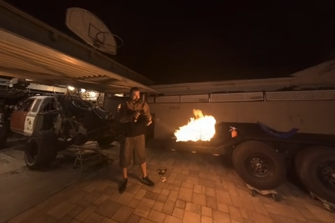

|
Benjamin Attal I'm entering my 6th year as a PhD student at Carnegie Mellon University, where I'm advised by Professor Matthew O'Toole. Previously, I received my Bachelor's and Master's degrees in Computer Science and Applied Math from Brown University. I'm supported by the Meta PhD fellowship in AR/VR Computer Graphics. |
{kind=link}
ResearchMy research lies at the intersection of computer vision, computational imaging, and machine learning. I am interested in leveraging physics-based light transport and neural fields to design robust systems for inverse rendering and 3D reconstruction. |

|
Flash Cache: Reducing Bias in Radiance Cache Based Inverse Rendering
Benjamin Attal, Dor Verbin, Ben Mildenhall, Peter Hedman, Jonathan T. Barron, Matthew O'Toole, Pratul P. Srinivasan ECCV, 2024 (Oral Presentation) project page / paper A more physically-accurate inverse rendering system based on radiance caching for recovering geometry, materials, and lighting from RGB images of an object or scene. |

|
Flowed Time of Flight Radiance Fields
Mikhail Okunev*, Marc Mapeke*, Benjamin Attal, Christian Richardt, Matthew O'Toole, James Tompkin ECCV, 2024 project page / paper C-ToF depth cameras can't reconstruct dynamic objects well. We fix that with our NeRF model that takes raw ToF signal and reconstructs motion along with the depth. |
|
|
Neural Fields for Structured Lighting
Aarrushi Shandilya , Benjamin Attal, Christian Richardt, James Tompkin, Matthew O'Toole ICCV, 2023 project page / paper We apply a neural volume rendering framework to the raw images from structured-light sensors in order to achieve high-quality 3D reconstruction. |
|

|
HyperReel: High-Fidelity 6-DoF Video with Ray-Conditioned Sampling
Benjamin Attal, Jia-Bin Huang, Christian Richardt, Michael Zollhoefer, Johannes Kopf, Matthew O'Toole, Changil Kim CVPR, 2023 (Highlight) project page / video / paper A 6-DoF video pipeline based on neural radiance fields that achieves a good trade-off between speed, quality, and memory efficiency. It excels at representing challenging view-dependent effects such as reflections and refractions. |
|
|
Learning Neural Light Fields with Ray-Space Embedding Networks
Benjamin Attal, Jia-Bin Huang, Michael Zollhoefer, Johannes Kopf, Matthew O'Toole, Changil Kim CVPR, 2022 project page / video / paper A fast and compact neural field representation for light fields. |
|
|
Towards Mixed-State Coded Diffraction Imaging
Benjamin Attal, Matthew O'Toole TPAMI, 2022 project page / paper A practical coded diffraction imaging framework that can decouple mutually incoherent mixed-states, such as different wavelengths. Applications in computational microscopy. |
|
|
TöRF: Time-of-Flight Radiance Fields for Dynamic Scene View Synthesis
Benjamin Attal, Eliot Laidlaw, Aaron Gokaslan, Christian Richardt, James Tompkin, Matthew O'Toole NeurIPS, 2021 project page / paper We apply a phasor volume rendering model to the raw images from C-ToF sensors in order to achieve high-quality 3D torfstruction of static and dynamic scenes. |
|
|
MatryODShka: Real-time 6DoF Video View Synthesis using Multi-Sphere Images
Benjamin Attal, Selena Ling, Aaron Gokaslan, Christian Richardt, James Tompkin, ECCV, 2020 (Oral Presentation) project page / video / paper We build a real-time inference and rendering framework for 6-DoF video based on multi-sphere images. |